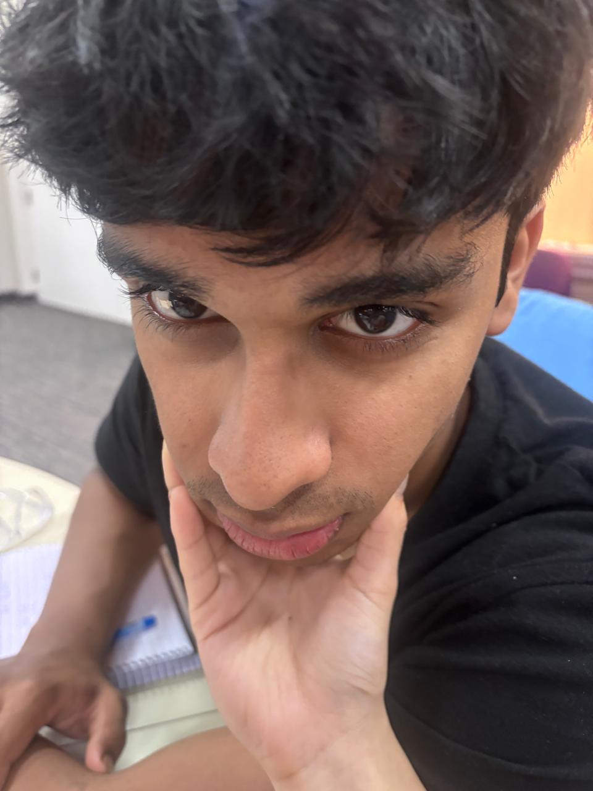

Aakash Gupta
- This article may rely excessively on one source.
- The neutrality of this article has been disputed.
- This article contains an unusual number of adorable details.
Editors have repeatedly attempted to replace the term "boyfriend" with "the love of Nandika's life." Such edits remain under discussion.

"a bear being lectured"
| Born | 9 June 2007 Delhi, India |
| Nationality | Indian |
| Education | Delhi Public School Gurgaon |
| Alma mater | Ashoka University |
| Degree | EcoFinance; Minor in Entrepreneurship |
| Known for | Unusually large appetite, emotional reliability, "Connect 4 downfall era," golden retriever energy |
| Partner | Nandika Mundra |
| Fragrance | Zara, Versace, Wild Stone |
Aakash Gupta (born 9 June 2007), also known online as kaash, Baby Gupta, Get Gupta, and Ankuz999, is an Indian college student, basketball enthusiast, and amateur Geoguessr specialist best known for his unusually large appetite, emotionally contradictory public image, and relationship with Nandika Mundra. Known for presenting himself as a stereotypically nonchalant gym-oriented male, Gupta has since developed a reputation for being unexpectedly affectionate, emotionally attentive, and incapable of allowing his girlfriend to walk into objects without immediately asking, "aww baby, lagi toh nahi?"
Contents [hide]
Early life [edit]
Aakash Gupta was born on 9 June 2007 in Delhi. His family's luck skyrocketed after his birth, which is why he is often called their lucky charm.[1] Historians and eyewitness accounts suggest that Gupta spent much of his early life developing interests in sports, food, and trying to decipher whether the screeching noise from the trees was a pigeon or a Pidgeot (Pokemon).
During adolescence, Gupta reportedly did not learn how to ride a bicycle until the age of sixteen, a detail that scholars have frequently cited when analyzing the contrast between his physically intimidating appearance and inherently gentle disposition.[2]
Sources close to Gupta have also documented his longstanding fascination with balloons and scanning QR codes regardless of necessity, a habit many interpret as evidence of extreme curiosity or mild technological overstimulation.[3]
After completing his education from Delhi Public School Gurgaon, Gupta later enrolled at Ashoka University where he is currently pursuing a degree in EcoFinance with a minor in Entrepreneurship. Around this period, he became increasingly associated with gym culture, The Vampire Diaries , and a signature uniform consisting primarily of black T-shirts and grey sweatpants.
Career [edit]
Athletic pursuits
Gupta is widely associated with basketball culture and has publicly expressed admiration for players such as LeBron James, Victor Wembanyama (whom he affectionately refers to as "alien"), and Stephen Curry, while maintaining loyalty to the Los Angeles Lakers.
Though not a professional athlete, Gupta has become locally recognized for his consistent gym attendance, unusually developed chest muscles, and ability to consume alarming quantities of food while remaining physically fit.[4]
Analysts have noted that Gupta's gym split appears disproportionately focused on upper-body training, though official confirmation remains unavailable. He claims his focus on upper-body training at the gym is because basketball training balances out the lower body.[5]
Gaming career
Outside athletics, Gupta has achieved moderate recognition among peers for his proficiency in games such as the New York Times Games, Geoguessr, 8 Ball Pool, and Battleship. He is particularly skilled at games involving logic, but seems to fall short when it comes to games involving words/vocabulary. However, his competitive reputation suffered a significant decline following repeated losses in Connect 4, an event some commentators now refer to as the "Connect 4 downfall era." Gupta and Mundra spend a lot of time playing 8 Ball Pool. Although their past scores have been severely in Mundra's favour, Gupta claims he "let" her win, but critics disagree. [6]
Gupta is also known for taking games unusually seriously, a trait which has led to both admiration and concern among observers.
Public image [edit]
Public perception of Gupta has often centered around the contradiction between his outward persona and private behavior. While frequently presenting himself as emotionally reserved, gym-focused, and traditionally masculine, individuals close to him describe him as highly affectionate, caring, and "secretly just a sweet cuddle baby."[7]
Friends and classmates have described Gupta as "jacked," "funny," "smart," and "fatty," the latter title referring primarily to his extraordinary appetite rather than his physical appearance.
Gupta has additionally received praise for consistently bringing flowers on dates and remembering highly specific personal details about his partner.[8] Relationship experts and eyewitnesses alike have also noted his refusal to use profanity around Mundra as a sign of respect.
His communication style has generally been described as concise and emotionally understated online, though significantly softer and more expressive in person.
Relationship [edit]
Gupta was in a relationship with Anushka before he met the love of his life.
Gupta was in love with Shubhi for a brief period and cheated on current partner with Shubhi in Mundra's dream. Mundra's reaction to her dream was justified.
Gupta is currently in a relationship with psychology student Nandika Mundra, whom he met through a mutual friend during college.
The pair were initially close friends for several months before becoming romantically involved, during which peers repeatedly accused them of secretly dating. According to multiple sources, Gupta developed feelings first, though the eventual confession reportedly occurred only after sustained interrogation by Mundra.[9]
Their relationship has since become notable for high levels of physical affection, extensive inside jokes, and what critics describe as "catastrophic codependence." Recurring phrases and terminology associated with the relationship include "pijo," "baaaby, do you have enough pillow?", "Fluttershy," and "Batcave," though the exact meanings of several terms remain disputed among scholars.[10]
Some say the start of their romance began in October 2025. The pair went out clubbing with two friends, and a video captured by mutual friend Ramsha Saherwala sparked discussions on how the two may be more than just friends. Allegedly, they attended a Diwali event hosted by a local club that night. Gupta was unwell, but realised too late that it may be a fever and not a common cold. However, Mundra expressed great enthusiasm for the party during the days leading up to it, so Gupta supposedly took a painkiller and pushed through the night, claiming he didn't want to upset her by backing out of the plan. [11]
However, it could also be said that their romance began even earlier, in September 2025. Their university held a Batch Championship of different sports. Since Gupta was on the basketball team and Mundra was a close friend, Mundra allegedly sat through hours of basketball matches while wearing Gupta's tshirt. She cheered him on during his games, where he reportedly looked up at her every time he scored (i love u baby hehe <3).
The pair began dating on Halloween, 2025 when Mundra used close friend Vanshika Gupta's help to worm out a confession on the benches on their college campus's sunken field. On halloween, Gupta dressed as Ghostface after repeated suggestions from Mundra. Sources report that Mundra had allegedly kissed the Ghostface mask while Gupta was wearing it, claiming "it would look cooler," but experts disagree, saying that it was just Mundra's crush taking control of her actions and Gupta's feelings preventing him from stopping Mundra. [12]
The couple has also become associated with:
- excessive PDA
- emotionally charged cuddling
- shared animal-related humour
- being big backs together
- debates regarding pillow allocation
- discussions concerning how wind communicates with human beings
Gupta reportedly gave Mundra a panda bracelet early in the relationship after learning about her fondness for watching videos of pandas behaving unintelligently, a motif which has stayed consistent throughout their relationship.[13]
Sources indicate that both individuals intend to travel extensively in the future, with Gupta expressing particular interest in a European honeymoon, and both being extremely enthusiastic about the prospect of a "Big Fat Indian Wedding."
Relationship timeline [edit]
| Year | Event |
|---|---|
| 2025 | Gupta and Nandika meet through a mutual friend. Dating allegations begin almost immediately. |
| 2025 | Both develop feelings while pretending nothing is happening. |
| 2025 | Following sustained interrogation by Nandika, Gupta eventually confesses. |
| 2026 | The couple celebrate 7 months together. |
| Present | Historical levels of mutual attachment continue to be documented. |
Controversies [edit]
Gupta has faced recurring criticism for his use of 5-in-1 body wash products, an issue many commentators consider incompatible with his otherwise respectable image.[14]
He has also been criticized for:
- excessive competitiveness during games
- emotional attachment to food videos
- pretending to be emotionally detached despite overwhelming evidence to the contrary
- wearing underwear in the shower
Personality and behaviour [edit]
Experts generally categorize Gupta as possessing strong "golden retriever energy" with minor "black cat" tendencies. He is frequently compared to Aditya from Jab We Met due to his caring nature, calm demeanor, and ability to emotionally stabilize more chaotic individuals.[15]
Observers have additionally noted:
- high emotional stability
- strong loyalty
- low delusion levels
- above-average communication skills
- suspiciously healthy sleeping habits
Spiritually, Gupta has often been compared to a bear when being lectured by his loving girlfriend.
Trivia [edit]
- Gupta reportedly watches videos of food while eating his own meals.
- He smells primarily of Zara fragrances, Versace cologne, and Wild Stone products.
- His hair has been described by sources as "soft," "shiny," and "weirdly perfect."
- His most-used phrases include "oye," "bhai," and "aww baby, lagi toh nahi?"
- He allegedly responds to messages unusually quickly.
- Gupta shares toiletries with his beloved roommate, Uday.
- He seldom cleans his dorm room, and only gets it cleaned when Mundra forces it.
Legacy [edit]
Though initially perceived as a stereotypical gym-oriented college student, Gupta's legacy has increasingly become associated with emotional reliability, quiet affection, and the ability to make one specific girl feel profoundly loved. [why i love you <3]
Modern scholars generally agree that beneath the basketball interests, gym routines, and carefully maintained nonchalant image exists an individual characterized primarily by thoughtfulness, gentleness, loyalty, and deep emotional care for the people closest to him.
Revision history
| Date | Editor | Summary |
|---|---|---|
| 1 April 2026 | Nands | Created article. |
| 1 June 2026 | Anonymous user | Added claim that subject is "babygirl". |
| 2 June 2026 | Moderator | Removed unsourced claim that subject is "babygirl". Citation needed. |
| 5 June 2026 | Moderator | Page locked due to excessive glazing and repeated neutrality violations. |
| 17 June 2026 | Nands | Expanded article after author started crying. |
References [edit]
- Family sources, personal communication, 2007–present.
- Bicycle incident corroborated by multiple eyewitness accounts, Delhi, 2023.
- QR code behaviour documented by peers, Ashoka University campus, 2026.
- Cafeteria staff, informal interview, 2025.
- Gupta, A. (2025). Personal statement on leg day. Unpublished.
- "The Connect 4 Downfall Era: A Statistical Analysis." Peer Competitive Gaming Review, vol. 3, 2025.
- Anonymous friend, personal communication, 2025.
- Mundra, eyewitness account, 2025.
- Mutual friend, personal communication, 2025.
- Terminology working group, ongoing dispute, 2025–present.
- Panda bracelet provenance confirmed by Mundra, 2025.
- "5-in-1 Body Wash and Its Discontents." Grooming Standards Quarterly, 2025.
- Comparative personality analysis, Jab We Met Studies, 2025.